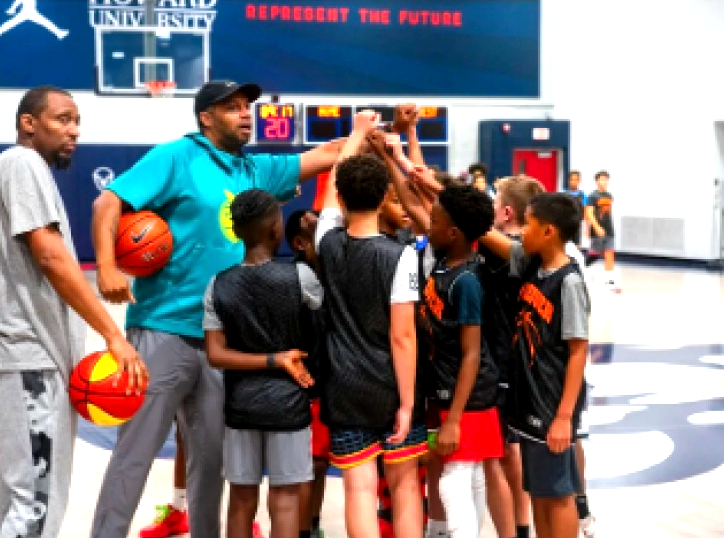
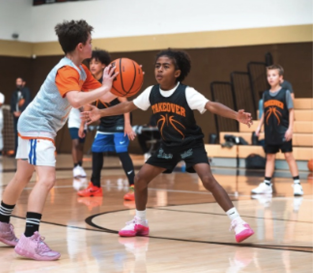
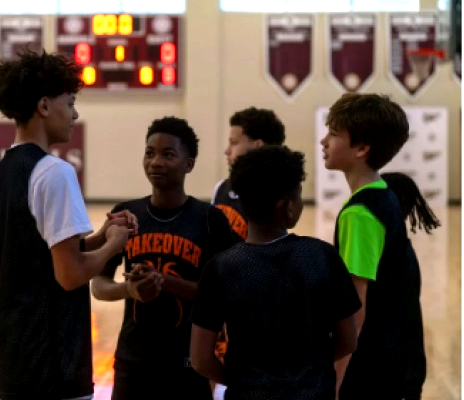
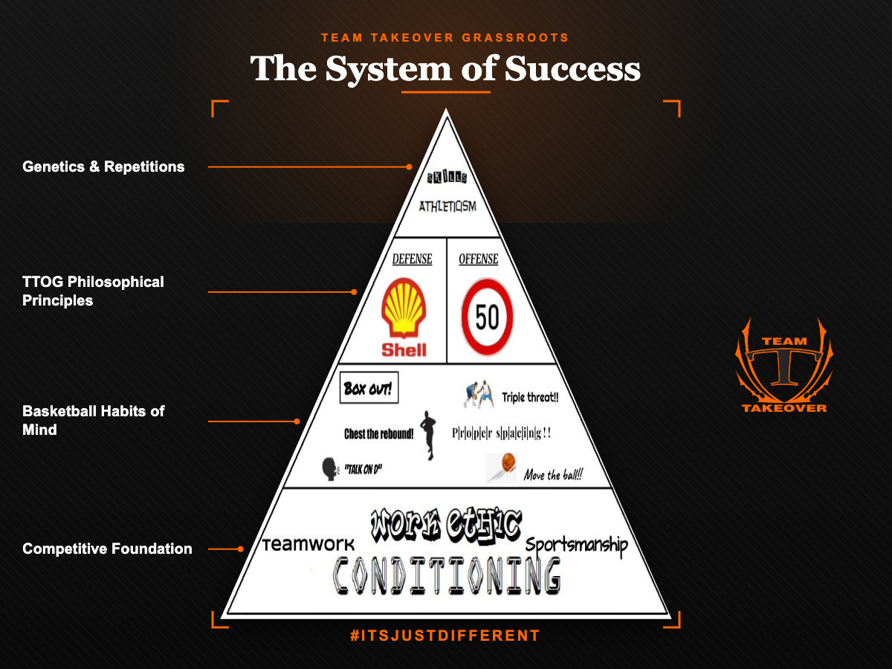
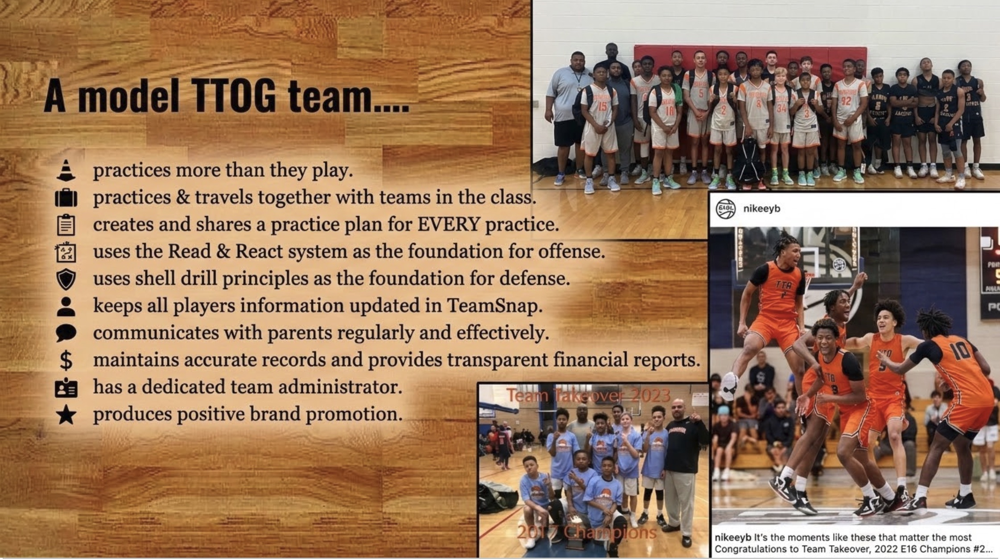
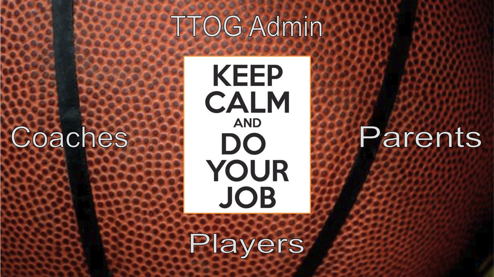

Winning isn't just what's on the scoreboard.
The spirit of youth sports is often centered on winning. While everyone wants to win, and most people expect to win, only one team gets to win at a time — creating a gap between expectations and actual results. We help parents focus on what it really means to W.I.N. in youth sports.
Trophies collected are not necessarily an indication of progress for a child. By adopting developmentally appropriate standards for what a successful season with TTOG basketball looks like — and communicating them clearly — we keep parents focused on truly "trusting the process." We do this by introducing the tenets of WINning at each grade: understanding What's Important Now.
It's a family, not just a team.
"It's not about one person — it's about us being a unit." That identity carries through every age group, from the youngest teams to the 15s, 16s, and 17s. Alumni stay close, mentor younger players, and come back to show support.
We want good kids from good families — good students who want to get better. It's not about chasing Blue Chip talent; it's about the right quality of character in the program.
We're committed to creating opportunities to maximize your child's scholar athlete career. Whether that means one day playing this game for money, earning free tuition to top high schools and universities, or just experiencing all the benefits of competitive athletics.



What's Important Now, grade by grade.
The Foundation
The game has changed over the years, but it's also stayed the same. The threads of success always lead back to a strong foundation: a competitive work ethic, skill development, a system, a team-first philosophy, and a genuine love for the game.

The Takeover Way
A lot of people say, "Trust the process." A lot of people say, "Stay the course." But have they given you a process you can trust? Have they given you a course you can follow? We've done this over and over again. Our track record speaks for itself. No need to reinvent the wheel. The game is the game, and nobody plays it better than us.

Takeover Family. Everybody has a job.
We keep it simple at Takeover Grassroots — we just come to put in work. Coaches, parents, players, administrators: everybody has a job. Stay focused on the work, commit to the process, and the pipeline takes care of the rest — wherever your child's goals may take them athletically.
